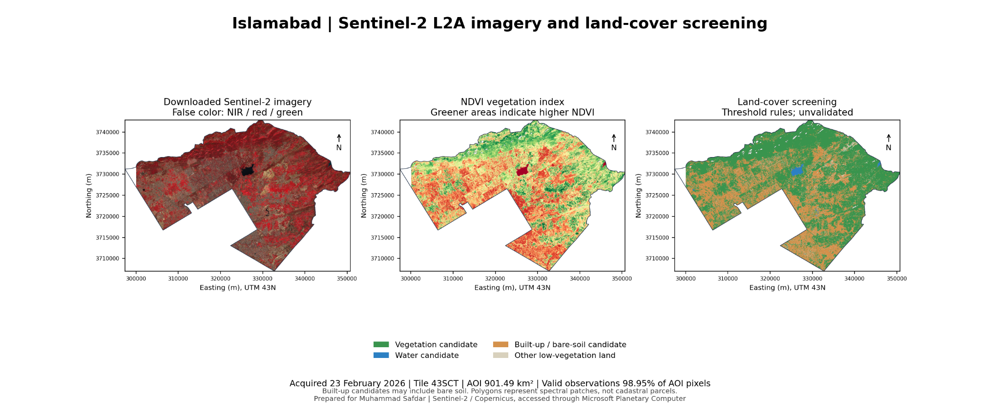

Original project interfaceGeoAI & GIS
Islamabad Feature Intelligence
Explore 245,625 combined OSM and Microsoft ML building references with category colors and filters, mapped roads and land use, and dated Sentinel-2 spectral screening. Interactive 3D-style charts show area, percentage and source details.